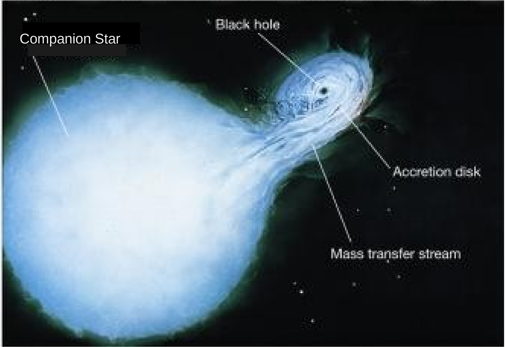

Section 13.2 H-R Diagram
The Hertzsprung-Russell Diagram or HR diagram is a graphical representation of the relationship between a star's luminosity (or brightness) and temperature, and it provides a way to classify stars based on their properties. Using the HR diagram, astronomers can determine where a star is in its life cycle, from its birth as a protostar, through its evolution on the main sequence, to its eventual death as a white dwarf, neutron star, or black hole. HR diagram helps to categorize and analyze the properties of stars at different stages in their evolution. Here's how to read the HR diagram Figure 13.2.1.(a):
- Temperature: The horizontal axis of the HR diagram shows the temperature of stars, with the hottest stars on the left and the coolest stars on the right. The temperature is usually measured in units of Kelvin (K) or degrees Celsius (°C).
- Luminosity: The vertical axis of the HR diagram shows the luminosity (or brightness) of stars, with the most luminous stars at the top and the least luminous stars at the bottom. The luminosity is usually measured in units of solar luminosity, which is the amount of energy emitted by the Sun.
- Main sequence: The main sequence is a diagonal band that runs from the upper left to the lower right of the HR diagram. This band represents the majority of stars in the universe, including our Sun. The stars on the main sequence are fusing hydrogen into helium in their cores.
- Red giants and supergiants: Above and to the right of the main sequence are red giants and supergiants. These stars are much more luminous than main sequence stars but have lower surface temperatures.
- White dwarfs: Below and to the left of the main sequence are white dwarfs. These stars are much less luminous than main sequence stars but have higher surface temperatures.
- Stellar evolution: By looking at where a star is located on the HR diagram, astronomers can determine its stage of evolution. For example, a star that has moved off the main sequence and is located in the region of red giants is nearing the end of its life and is fusing heavier elements in its core.
A brown dwarf is a type of substellar object that is too massive to be classified as a planet but not massive enough to sustain nuclear fusion in its core, which is the process that powers stars. Brown dwarfs have a mass between that of the heaviest gas giant planets and the lightest stars, typically ranging from about 13 to 80 times the mass of Jupiter. It can be called as a prenatal defects star. Because brown dwarfs cannot sustain nuclear fusion, they gradually cool and dim over time, eventually becoming cold and dark objects similar in temperature and appearance to planets. However, unlike planets, brown dwarfs form in the same way as stars, from the collapse of a cloud of gas and dust. Brown dwarfs are difficult to observe directly because they are relatively dim and emit most of their radiation in the infrared part of the spectrum. However, they can be detected using a variety of methods, including their gravitational influence on nearby objects and the heat they emit as they cool. Brown dwarfs are important objects for astronomers to study because they provide a link between planets and stars and can help us understand the formation and evolution of these objects.
A black dwarf is a hypothetical type of stellar remnant that is formed when a white dwarf, the final stage of stellar evolution for low-mass stars like the Sun, cools down and no longer emits significant amounts of light or heat. The formation of a black dwarf is a very slow process that would take trillions of years to occur. As the white dwarf cools down, it would lose its heat energy and become increasingly dimmer until it no longer emits any light. At this point, it would be considered a black dwarf. However, no black dwarfs are thought to exist in the universe yet, because the time required for a white dwarf to cool down to this state is much longer than the current age of the universe. The universe is currently estimated to be about 13.8 billion years old, which is not enough time for a white dwarf to cool down and become a black dwarf.
The size of stars can be determined by the position of stars on HR digram. The position of a star on the HR diagram is determined by its luminosity and temperature, which in turn are related to the star's size and mass. Generally, more massive stars are larger and hotter, and they also have higher luminosities. Smaller stars, on the other hand, are cooler and less luminous.
The phrase OBA Nice girl (guy) kiss me is a mnemonic to remember the spectral sequence of stars from hottest to coolest, which corresponds to the order of spectral types O, B, A, F, G, K, and M. O-type stars are blue and located on the upper left of the diagram, while M-type stars are red and located on the lower right. Our Sun is classified as a G-type star, which is a main-sequence star that has a surface temperature of around 5,500 degrees Celsius (9,932 degrees Fahrenheit). G-type stars like the Sun have a yellow-white color and are located in the middle of the HR diagram.
Subsection 13.2.1 Supernovas
A supernova is a powerful and catastrophic explosion that occurs when a star reaches the end of its life. Supernovae can release an enormous amount of energy, equivalent to the energy emitted by an entire galaxy. There are two main types of supernovae: Type Ia supernovae are thought to occur when a white dwarf star in a binary system accretes matter from its companion star, eventually reaching a critical mass and exploding. Type Ia supernovae are important for measuring cosmic distances because they have a relatively consistent and predictable brightness. Type II supernovae occur when a massive star runs out of fuel for nuclear fusion in its core and collapses under its own gravity. The core of the star becomes incredibly dense and hot, leading to a rapid release of energy that produces a powerful explosion. Type II supernovae can leave behind a neutron star or a black hole. Supernovae are important for a number of reasons. They are responsible for the production of heavy elements such as iron and gold, which are essential for life as we know it. Supernovae can also trigger the formation of new stars and planetary systems. Additionally, the energy and material released by supernovae can have a significant impact on their surrounding environment, including the formation of nebulae Subsection 14.1.5 and the acceleration of cosmic rays.
Subsection 13.2.2 Neutron Stars
A neutron star is a type of compact star that is incredibly dense, with a diameter of only about 10-20 kilometers and a mass of around 1.4 to 3 times that of the Sun. Neutron stars [Figure 13.2.2.(a)] are formed when a massive star undergoes a supernova explosion, and the core of the star collapses under its own gravity, becoming so dense that protons and electrons combine to form neutrons. The extreme density of a neutron star means that it has a gravitational field that is over a billion times stronger than Earth's, and it spins very rapidly, often several times per second. This rapid rotation can produce intense magnetic fields, making neutron stars some of the strongest magnets in the universe. The strong magnetic fields can also produce beams of radiation that are visible as pulsing signals, leading to the term pulsar [Figure 13.2.2.(b)] for a rotating neutron star that emits such signals. Neutron stars are incredibly hot, with surface temperatures estimated to be around 1 million degrees Celsius (1.8 million degrees Fahrenheit), and they emit radiation across the electromagnetic spectrum, from X-rays to radio waves. They are also believed to be a source of heavy elements in the universe, as they are thought to be involved in the production of many of the elements beyond iron.
The current understanding is that if a white dwarf star exceeds a mass of about 1.4 to 3 times the mass of the Sun, known as the Chandrasekhar limit, it will collapse and become either a neutron star.
Subsection 13.2.3 Pulsars
Pulsars [Figure 13.2.2.(b)] are believed to be rotating neutron stars that emit beams of radiation from their magnetic poles. As the neutron star rotates, the beams of radiation sweep across space like a lighthouse, producing a regular pattern of pulses that can be detected by telescopes on Earth.
Subsection 13.2.4 Black Holes
A black hole [Figure 13.2.2.(c)] is a region of space where the gravitational pull is so strong that nothing, not even light, can escape. Black holes are formed from the remnants of massive stars that have undergone a supernova explosion and collapsed under their own gravity. If the collapsing object is larger than about 3 times the mass of the Sun, the gravitational forces become so strong that not even neutrons can resist the collapse, and a black hole is formed. Black holes are extremely dense objects that have such strong gravity that nothing, not even light, can escape their grasp. They have no surface or structure, but instead are characterized by their mass, spin, and electric charge. The mass of a black hole can range from a few times that of the Sun to billions of times that of the Sun. The region around a black hole where the gravitational pull is so strong that nothing can escape is called the event horizon. Once matter crosses the event horizon, it is trapped by the black hole and cannot escape. The point at the center of a black hole where the gravitational pull becomes infinite is called the singularity, and our current understanding of physics breaks down at this point. Black holes are invisible, as they do not emit any light or other forms of radiation. However, their presence can be inferred from the effects of their gravity on nearby matter. For example, if a black hole is in a binary star system, its gravity can cause the visible star to wobble, and the mass of the black hole can be estimated from the size of the wobble. As a black hole pulls matter into it, the matter gets accelerated and emits radiation that can be detected by telescopes. This radiation can come from the accretion disk around the black hole [Subsection 14.1.7], where matter gets heated up and emits X-rays and other high-energy radiation.

Subsection 13.2.5 Evolution of the Solar System
The Solar System is thought to have formed around 4.6 billion years ago from a giant cloud of gas and dust called the solar nebula. The process of Solar System formation is still not completely understood, but scientists have developed a theory called the nebular hypothesis to explain it. According to the nebular [Subsection 14.1.5]hypothesis, the solar nebula began to collapse under its own gravity, forming a spinning disk of gas and dust. As the disk spun faster and flattened out, it began to heat up and the pressure at its center increased, eventually leading to the formation of the Sun. At the same time, small grains of dust and ice in the disk began to stick together, forming larger and larger clumps. These clumps eventually became planetesimals, which collided and merged to form the planets. The inner planets, including Mercury, Venus, Earth, and Mars, are thought to have formed from the solid materials that were closest to the Sun. They are relatively small and rocky, with few or no moons. The outer planets, including Jupiter, Saturn, Uranus, and Neptune, are much larger and more massive than the inner planets. They are also composed mostly of gas and ice, with many moons and other small objects orbiting them. After the planets formed, the Solar System continued to evolve. Some objects, such as comets and asteroids, were ejected from the Solar System, while others collided with the planets and moons, causing significant changes to their surfaces. Today, the Solar System is still changing. The planets continue to orbit the Sun, and some are still active, with volcanic activity, weather patterns, and other processes shaping their surfaces. The study of the Solar System's evolution is an active area of research, with scientists using telescopes, spacecraft, and other tools to explore its history and understand how it came to be the way it is today.
oneminuteastronomer.com/808/hr-diagram/Supernova Explosion in Galaxy - XciteFun.netMost massive neutron star ever measured stretches the limits of physics (newatlas.com)cronodon.com/SpaceTech/Pulsar.htmlPublic Lecture: The Cool Alter-Ego of a Black Hole - Press Release | Institute for Advanced Study (ias.edu)www.powershow.com/view/1478a1-N2JiO/Cygnus_X-1_is_a_Black_Hole_Binary_powerpoint_ppt_presentation